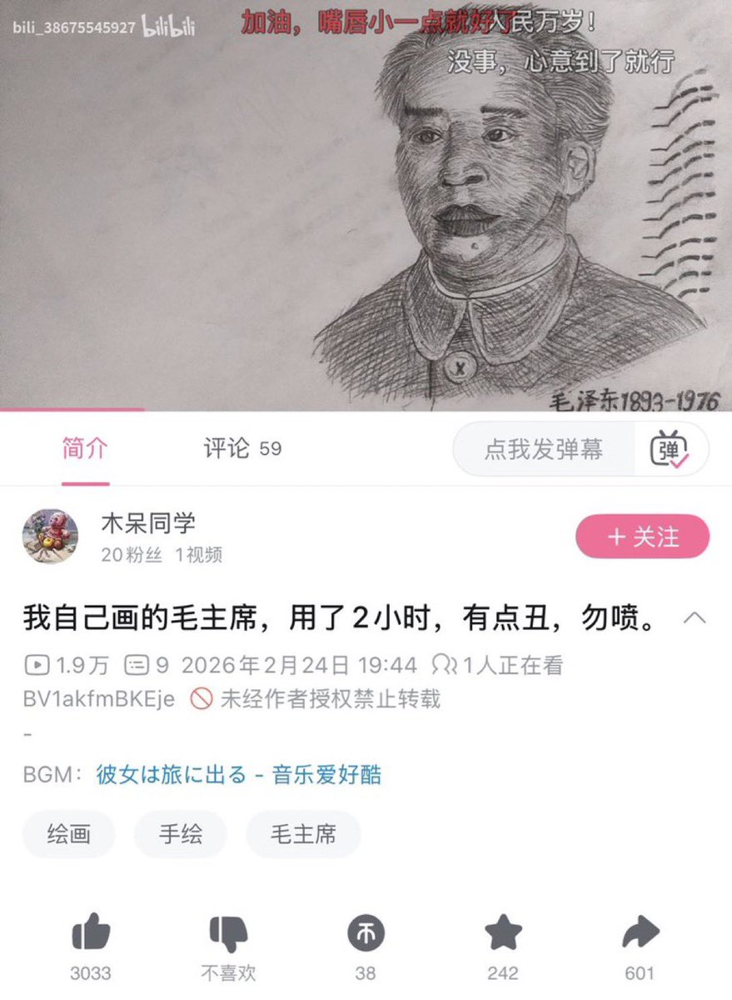

Дистанционизм
@432Ifantrygroup
@8964TianAnMens 这有什么，无伤大雅嘛，我们马克思主义者强调了一辈子生产资料公有制，怎么能说这是辱呢，在文化领域，英雄形象也是一种精神生产资料。
毛主席的形象早已不再仅仅是一个具体的国家领导人，而是变成了一个阶级文化符号。既然是符号，它的解释权就应该归属于广大劳动群众，而不是由少数知识分子垄断。

习泽东与毛近平
@8964TianAnMens
大家现在都学精了，打着尊敬毛主席的旗号，一顿瞎JB乱画，把毛泽东画得跟鬼一样，谁还分得清到底是真毛左还是在辱腊😂 https://t.co/HAcTtd5U81